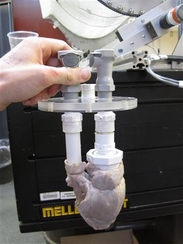
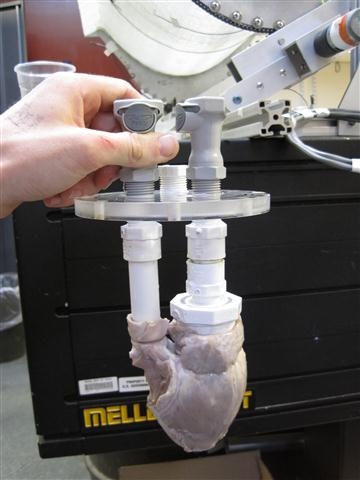
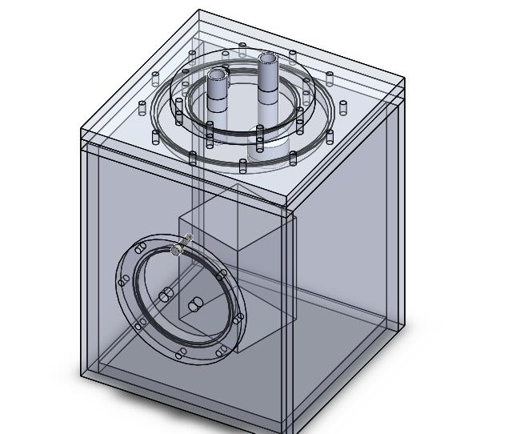
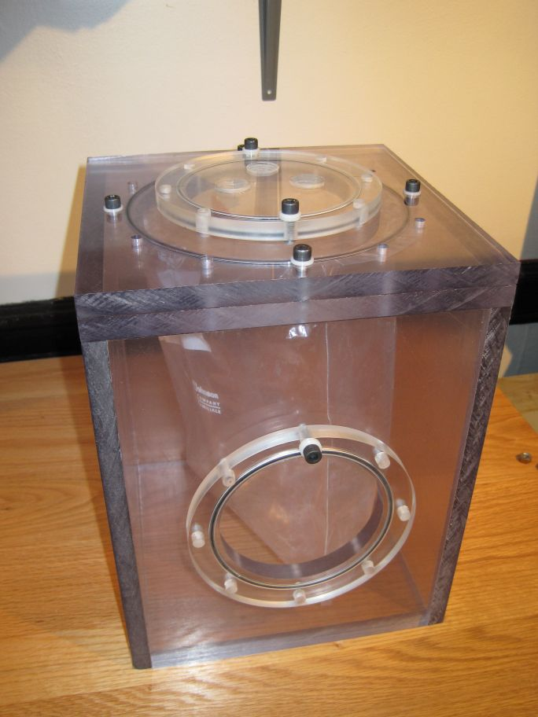

Mitral Valve Simulator UROP
The mitral valve is a bicuspid valve in the heart ushering blood from the left atrium to the left ventricle and preventing backflow. Mitral valve prolapse (MVP) is the condition in which the two leaflets of the mitral valve do not coapt properly during systole, resulting in a leaky (regurgitant) valve. Devices to repair such a valve are currently being designed, but currently no functioning test apparatus exists that adequately mimics the pressures and environment inside the heart.
I am working to design and prototype a simulator for use in the testing of mitral valve repair devices. My simulator accurately models the proper fluid flow and dynamic motions, while providing an adequate method for testing repair devices. The design is based on a water chamber surrounding the heart which is pressurized by a bladder actuated by a controlled air supply. Inlet and outlet valves form a closed water system connected to the left atrium and aorta respectively. A camera port is incorporated into the inlet valve for easy viewing of the top of the mitral valve.
The simulator is currently undergoing testing and will be available for use by the end of this semester.
 
